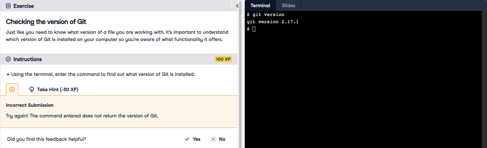

Phase 2
A few days after posting the previous blog post, lectures covered data visualization and it reminded me how impractical pie charts are! I think they may have been (correctly) phased out of existence as I could not recall the last time that I saw one. In any case, I did a cursory search for a good use for a pie chart, or even a fun one, but no dice on FiveThirtyEight and the like. Then, I considered recreating the classic pyramid pie chart in seaborn, but couldn't exactly figure out how to rotate it to get same effect. Despite my background in User Experience, data visualization is new to me. Kernel Density Estimate, Heatmap, and Hexbin look visually appealing to me, but not sure yet how well they display data and hoping that they do!
Moving to Phase 2, as someone with a little experience in MySQL and PostgreSQL, SQLite is new and its slight differences are bit confusing for me. For example,
I recently learned that unsigned doesn't work in SQLite because the database cannot store 64-bit integers in it. Instead, you can run something like:
CREATE TABLE my_table (
id INTEGER PRIMARY KEY,
number INTEGER CHECK (number >= 0)
);
That seems a little weird to me? A friend suggested to me that I focus on Snowflake for better data structuring and I'd like to look into it when I have more time.
My learning productivity schedule from Phase 1 is mostly the same idea, with Python insight changed to statistics insight. Learning and reviewing Python is a skill that I still want to hone,
but priorities are being shifted. Thinking that I'd like to go through LinkedIn Learning's Python Essential Training again near the end of my course to display its certificate on my profile.
The new books on my agenda are:
- Head First Statistics by Dawn Griffiths
- Statistics in a Nutshell, 2nd Edition by Sarah Boslaugh
DataCamp account was deleted in petty revenge after this exercise, where I also tried git ––v:

A personal project that I am thinking about for the future is analyzing data for the ideal weight for someone of my size. I am thinking of looking at Kaggle for female Olympians competing in taekwondo if such dataset is available and usable, with an aim to look at numbers at the lower end of the 25% quartile as I don't exactly have the regiment and advantages that these athletes have.
December 18, 2023corvusxi.github.io
Phase 1
My path to data science begins with my background in both Graphic Design and User Experience, and decided the field would be an excellent compliment for my career path. It is, and I continue it hopes to be, an excellent challenge as well. Visuals and user interfaces are my current strengths. From that, I understand users from qualitative standpoint through user interviews and creating personas. Quantitative data is a new field for me, and the large set of information would be great for the user research branch. Near or after the completion of this course, I’d like to bring that data into Tableau, or learn Power Bi.
Mastery is always a struggle for balance. - Maria Konnikova, The Biggest Bluff
One of my initial challenges is that I often feel that my time management skill needs incredible improvement with my full schedule for this 15 week course. I'd really like to establish learning habits for certification success. On productive days, this can include:
- Watch at least one relevant video on LinkedIn Learning.
- Study at least one Python informative on the O'Reilly website. Currently, it's the book Head First Python by Paul Barry.
- Clear one step in the freeCodeCamp Data Analysis With Python course.
- Earn the daily 250XP in DataCamp.
In an overlap in an interest to pick up mathematics books and to prepare for this course, I also started reading from the Very Short Introduction series from Oxford University Press. Earlier this year, my first book was Mathematics by Timothy Gowers. Next, The History of Mathematics by Jacqueline Stedall. Then, I read Statistics by David J. Hand. Currently, my commute book is Numbers by Peter M. Higgins.
Another challenge is planning ahead for my capstone project. I am siding towards the infrastructure of New York City as I was inspired by the book Streetfight by Janette Sadik-Khan. She was the Commissioner of the New York City Department of Transportation from 2007–2013 under Mayor Michael Bloomberg. I was also inspired by a 2021 article on Curbed about Perfecting the New York Street. Safety for pedestrians and bicyclists is important to me, as well as improving public transit, for a more efficient city.
As a minute project as a challenge, the CSS of this web design needs a lot of refining. Hope my habit of ending lines in VS Code with semicolons does not return.
November 27, 2023corvusxi.github.io